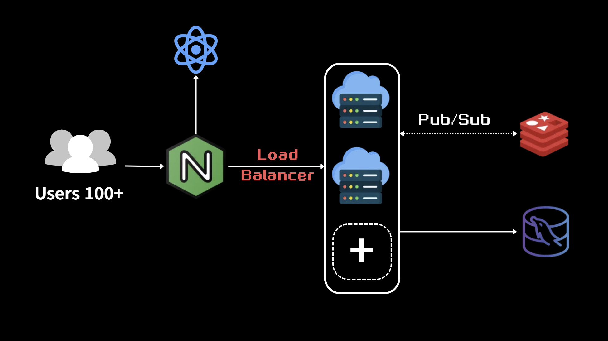
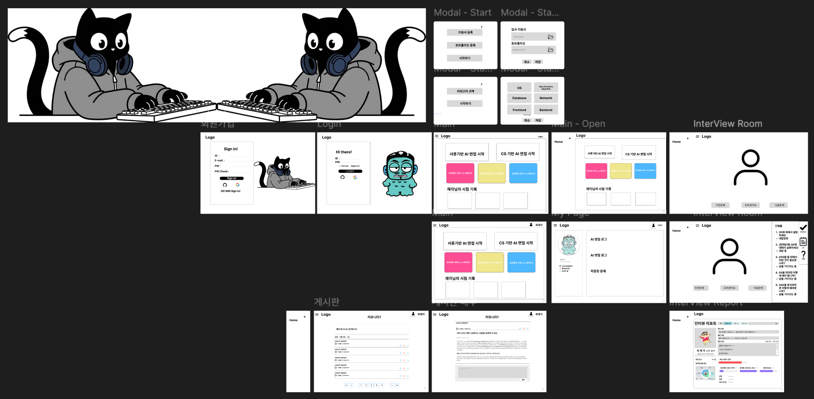
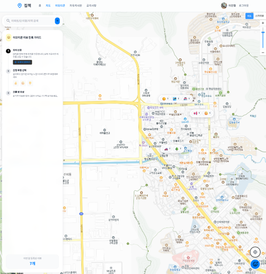

핵심 역량
- REST API 설계와 계층형 백엔드 구조 구현
- Spring Security · JWT 기반 인증/인가 구현
- 인덱스 설계와 SQL 쿼리 튜닝으로 조회 성능 개선
- 비동기 처리로 외부 API 응답 병목 해소
- k6 · SQL Profiling 기반 성능 측정과 검증
Backend Developer Portfolio
기능이 아니라 흐름을 설계하는 백엔드 개발자
문제를 명확히 정의하고, 팀이 이해하기 쉬운 구조와 기록을 남기는 개발자
프로젝트에서 다뤄본 구조와 문제 해결 경험을 기준으로 정리했습니다. 기술 스택보다 요청 흐름, 데이터 정합성, 배포 흐름에서 어떤 고민을 했는지에 초점을 맞췄습니다.
Java · Spring Boot · Spring Security · Spring Data JPA · MyBatis · JWT
Controller·Service·Repository 계층 분리로 REST API 요청 처리 책임을 명확히 구분Spring Security 인증 필터와 JWT Access/Refresh 이중 토큰 발급·재발급 구현@Transactional 경계를 고려한 도메인 로직 구성으로 일관성 확보@Async 기반 작업 분리와 상태 관리로 외부 API 응답 대기 병목 완화Spring Data JPA와 MyBatis를 프로젝트 특성에 맞게 선택·활용MySQL · Redis
EXPLAIN으로 실행 계획을 분석해 인덱스가 동작하는 SARGable 쿼리로 개선Generated Column으로 함수 연산을 제거하고 조회 패턴 기반 복합 인덱스 구성Redis 캐시로 처리해 DB 부하 완화Docker · Docker Compose · Nginx · AWS EC2
Git · GitHub · Notion · Jira
Git 브랜치로 작업을 분리해 병합 충돌 최소화PR 단위로 변경 범위를 공유하고 리뷰로 검토Jira로 작업을 분배하고 진척도 추적Notion에 구조와 의사결정 근거 기록Project 01
최대 100명 동시 참여 실시간 멀티플레이 미니게임 파티 플랫폼
우주오락실은 차원을 넘나들며 최대 100명이 동시에 겨루는 실시간 멀티플레이 미니게임 파티 플랫폼입니다. 매 라운드 무작위 미니게임으로 워프하고, 누적 점수로 최종 우승자를 가립니다.


백엔드 · 인프라 영역에서 다음을 담당했습니다.

Nginx 로드밸런서가 100명 이상의 트래픽을 여러 백엔드 인스턴스로 분산하고, 인스턴스 간 실시간 메시지는 Redis Pub/Sub으로 동기화하는 구조입니다.
로드밸런싱으로 백엔드를 여러 대 띄우면, STOMP의 convertAndSendToUser는 호출한 서버의 로컬 세션 레지스트리(SimpUserRegistry)만 조회합니다. 대상 유저가 다른 서버에 연결돼 있으면 개인 랭킹·결과 메시지가 전달되지 못하고 유실됐습니다.
PRIVATE 메시지를 (userId, destination, payload) envelope으로 포장해 Redis Pub/Sub /internal/private 채널에 broadcast
모든 서버가 envelope을 수신 → 각자 convertAndSendToUser 호출 → 유저 세션이 있는 서버만 실제 전송, 나머지는 no-op
멀티 인스턴스 배포 환경에서 서로 다른 서버에 연결된 유저 간 메시지 정상 수신 확인
단일 서버를 전제로 동작하던 WebSocket 메시징이 멀티 인스턴스 환경에서는 그대로 깨진다는 것을 체감한 작업이었습니다.
convertAndSendToUser 같은 추상화가 내부적으로 무엇을 가정하는지 이해해야 분산 환경의 함정을 피할 수 있다는 점,
그리고 새 인프라를 더하기 전에 이미 가진 자원으로 풀 수 있는지 먼저 따지는 판단을 배웠습니다.
Project 02
Whisper 및 GPT 기반 AI 면접 분석 · 피드백 서비스
DADAP은 CS 면접과 포트폴리오 면접을 반복 연습하고, 답변 분석 결과와 피드백, 꼬리질문으로 다시 복기할 수 있도록 만든 AI 면접 분석 플랫폼입니다.



다음 도메인의 설계와 구현을 담당했습니다.
@Async 비동기 처리 · AnalysisJob 상태 관리
AI 서버의 실제 지연은 약 2초였으나, 응답을 기다리는 동안 WAS 워커 스레드가 계속 점유되면서 후속 요청이 큐에서 대기하는 Thread Starvation이 발생했습니다. 이로 인해 사용자가 체감하는 응답 대기는 약 30초까지 누적되었습니다.
202 Accepted로 요청을 먼저 접수하고 AI 호출은 @Async 작업으로 분리
QUEUED / RUNNING / DONE / FAILED 상태로 작업 진행과 결과 조회 흐름 분리
외부 네트워크 변수를 제거하기 위해 Mock AI 서버를 구축하고, k6 20VU로 동기/비동기 구조의 처리량과 완료 시간 비교
대기하던 분석 작업을 스레드 풀에서 병렬 처리해 단축
k6 20VU 동일 부하에서 처리 완료한 요청 수
AI 작업 완료를 기다리지 않고 즉시 접수
@Async를 선택했는가? (다른 비동기 방식 대비)
CompletableFuture 대비 풀 관리가 선언적, 추가 인프라 0@Async만으로 충분할까?
AnalysisJob과 결과 조회 API로 흐름 분리외부 AI API처럼 응답 시간이 긴 작업은 요청 접수와 작업 완료를 분리해야 사용자 응답성과 서버 안정성을 함께 확보할 수 있었습니다. 다만 부하 테스트 응답 성공률이 약 75%에 머문 점은 아쉬움으로 남았는데, 비동기 폴링 타임아웃이 실제 AI 작업 시간보다 짧게 설정된 것이 원인이었습니다. 향후에는 폴링 대신 SSE 기반 이벤트 전달로 전환해 상태 확인 구조를 더 안정적으로 다듬을 계획입니다.
Project 03
지도 기반 부동산 매물 · 감정 스티커 커뮤니티
ZipCheck는 지도 위에 감정 이모지 스티커를 부착해 동네 분위기를 직관적으로 공유하고, 실거래가 차트와 AI 리뷰 요약으로 매물 선택을 돕는 부동산 커뮤니티 플랫폼입니다.




다음 영역의 설계와 구현을 담당했습니다.
추가로 Vue 3 · Pinia · Tailwind 기반 14개 페이지의 UI와 라우팅을 구성하고, Chart.js로 실거래가 차트를 시각화했습니다.

매물 스티커를 Spring 서버가 AI 서버로 인덱싱 요청하고, FastAPI가 ChromaDB 벡터 DB에 적재하는 AI RAG 연동 구조입니다.
가격 검색에서는 거래 금액이 "123,000"처럼 쉼표 포함 VARCHAR로 저장되어 매번 CAST·REPLACE 함수가 적용되었습니다. 지역 JOIN에서는 법정동 코드 10자리에 LEFT(dong_code, 5) 함수가 적용되었습니다. 두 경우 모두 함수가 적용된 컬럼은 인덱스를 탈 수 없어, 720만 건 규모에서는 3-way JOIN과 함께 Full Table Scan이 발생했습니다.
Generated Column (STORED)을 두 곳에 동일 패턴으로 적용 — 가격은 deal_amount_num, JOIN은 sgg_prefix로 함수 연산을 DB가 미리 계산해 인덱스 부여
아파트 + 날짜 / 면적 / 금액 조합 복합 인덱스 3종으로 다차원 필터링 가속, JOIN용 (sgg_prefix, dong_name) 인덱스 추가
SQL Profiling으로 CPU 시간을 측정하고, EXPLAIN으로 실행 계획 변화(type: ALL → range, key: NULL → idx_hd_apt_amount)를 확인해 인덱스 가동률(SARGability)을 직접 증명
100만 건 데이터셋 SQL Profiling 3회 평균
매회 발생하던 문자열 변환 연산 제거
EXPLAIN ANALYZE 기준 3-way JOIN 종합 쿼리
SHOW PROFILE CPU로 파싱·실행 단계별 CPU 시간 분리EXPLAIN과 병행해 인덱스 가동률을 직접 증명apt_seq를 복합 인덱스 맨 앞에 두었는가?
apt_seq로 먼저 범위를 좁힌 뒤 날짜·면적·가격 조건 적용가공된 데이터를 애플리케이션 레이어가 아닌 DB 엔진 레벨에서 해결할 때 확장성이 어디까지 달라지는지를 체감한 작업이었습니다. 인덱스를 가동하지 못하는 쿼리는 데이터셋이 커질수록 비례 이상으로 비용이 증가한다는 점, 그리고 측정 도구의 선택이 곧 최적화 근거의 신뢰도를 결정한다는 점을 함께 배웠습니다.